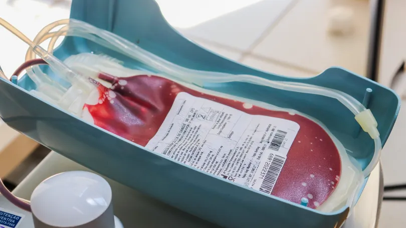

A Comissão de Constituição e Justiça (CCJ) do Senado pautou para votação nesta quarta-feira (3) uma proposta de emenda à Constituição (PEC) que permite a comercialização de plasma sanguíneo.
O texto em análise abre espaço para que doadores recebam uma compensação financeira, além de autorizar a atuação de empresas privadas na produção e comercialização de hemoderivados.
Atualmente, esta atividade é uma exclusividade da Empresa Brasileira de Hemoderivados e Biotecnologia (Hemobrás).
A partir do plasma sanguíneo, a indústria farmacêutica consegue separar fatores e insumos específicos para o tratamento de diversas doenças.
Esse material pode ser passado diretamente ao paciente, como uma transfusão, ou transformado em medicamento pelos laboratórios.
Veja abaixo as principais perguntas e respostas para entender a PEC:
O que é a Hemobrás?
O que estabelece a Constituição?
O que propõe a PEC?
O que diz o Ministério da Saúde?
Quais são os argumentos da iniciativa privada?
O que a relatora defende?
O que é a Hemobrás?
A Empresa Brasileira de Hemoderivados e Biotecnologia (Hemobras) foi fundada em 2004, no primeiro governo Lula.
A estrutura ainda não ficou pronta e, atualmente, só produz alguns hemoderivados, como os chamados "fator VIII" e "fator IX", voltados a pessoas com hemofilia.
Para obter outros produtos, a Hemobras é obrigada a exportar o plasma sanguíneo brasileiro "bruto" para laboratórios no exterior – e, em seguida, importar o material beneficiado, mais caro.
Segundo a ministra da Saúde, Nísia Trindade, o governo trabalha para que a Hemobras possa ampliar a oferta de hemoderivados até 2025.
O governo federal deve investir R$ 900 milhões no parque fabril da Hemobras em Goiana (PE). Os recursos fazem parte do Programa de Aceleração do Crescimento (Novo PAC).
CCJ do Senado inclui na pauta projeto que permite venda de plasma sanguíneo; entenda
